Grid 108 (kanvas adaptive icon Android). Warna dari design system: teal #0F766E, netral hangat, aksen status. Font kata: Plus Jakarta Sans Bold.
Huruf S dari dua busur geometris dengan satu titik tujuan: belajar sebagai alur yang bergerak menuju selesai.
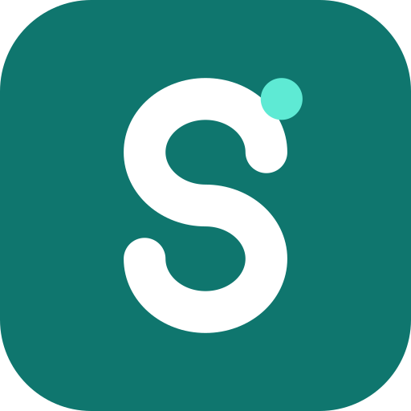
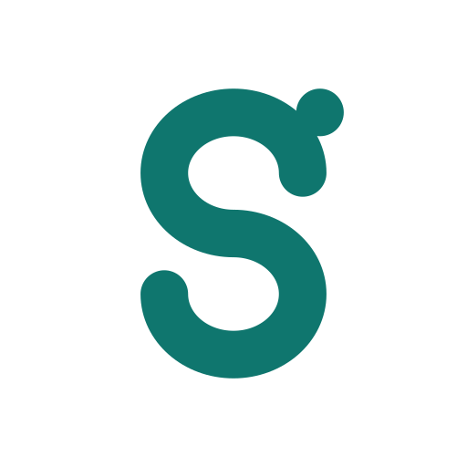
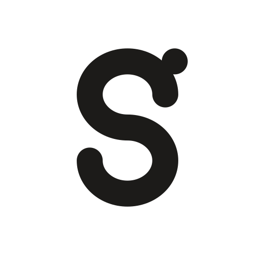
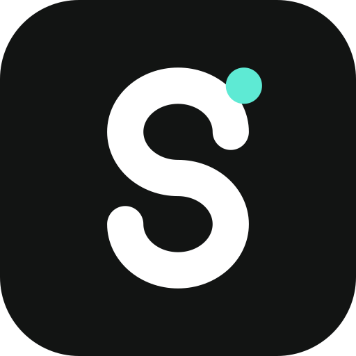
Tiga baris agenda dengan garis warna mata kuliah, langsung diambil dari bahasa visual aplikasi.
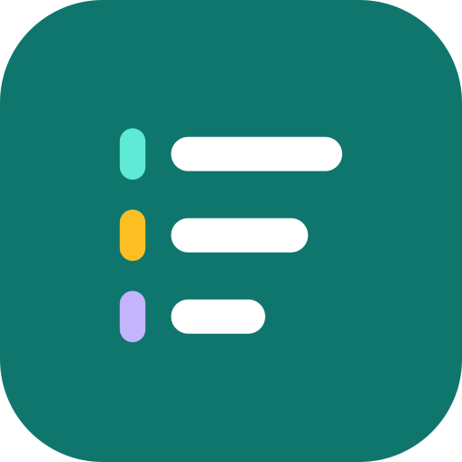
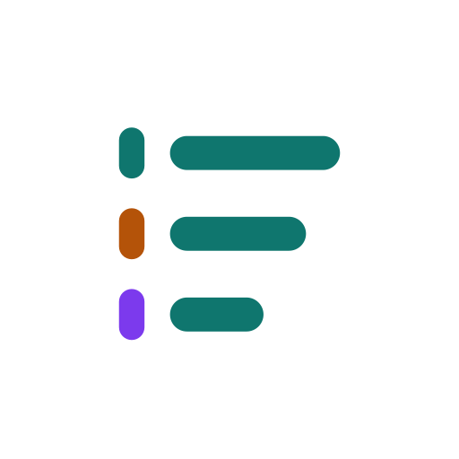
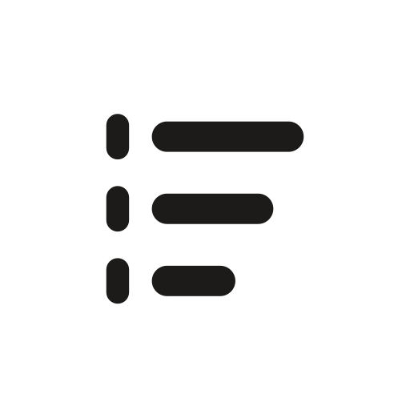
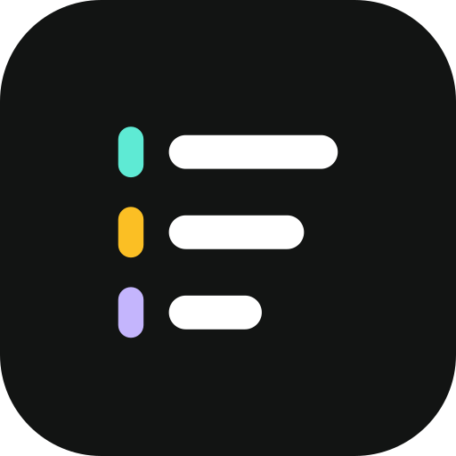
Satu lingkaran dibagi empat kelompok waktu (Terlambat, Hari ini, 7 hari, Nanti): agenda sebagai jam.
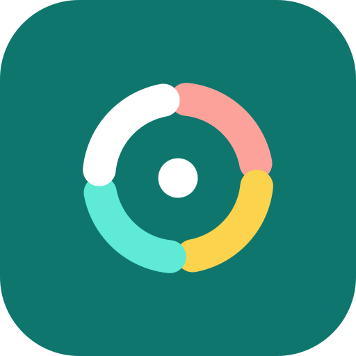
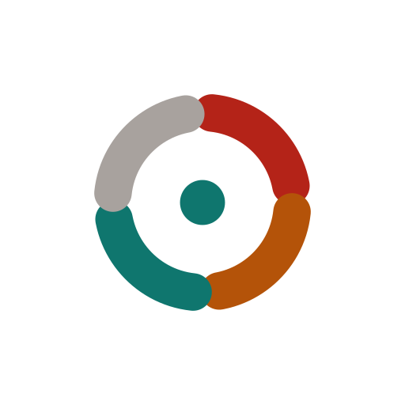
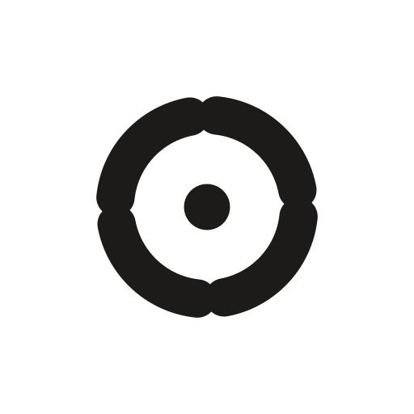
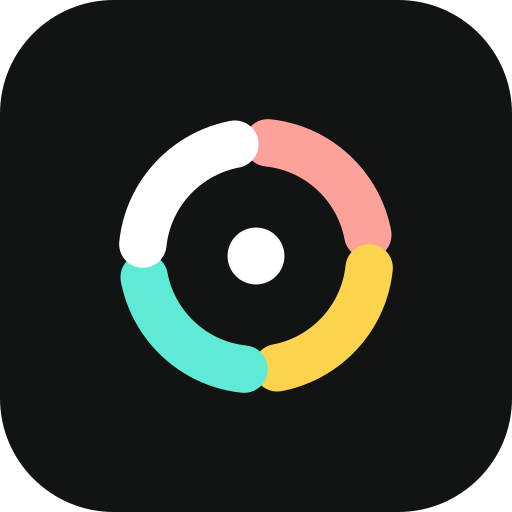
Tiga tiang yang naik dengan titik di puncak: progres bertahap dari tugas ke tugas.
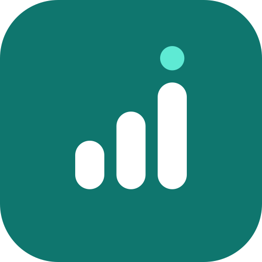
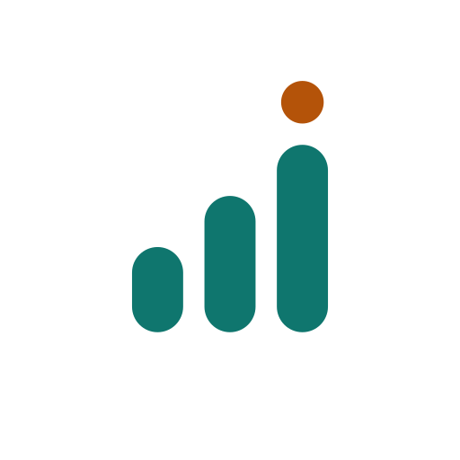
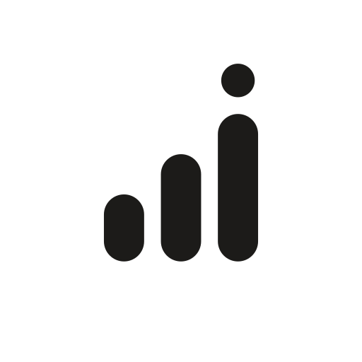
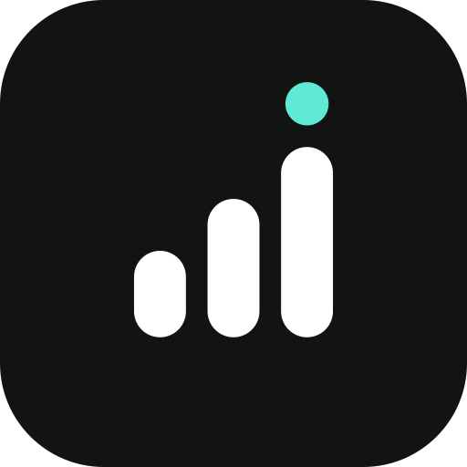
Dua ubin setengah-bulat yang bergeser membentuk S; ruang di antaranya adalah alur.
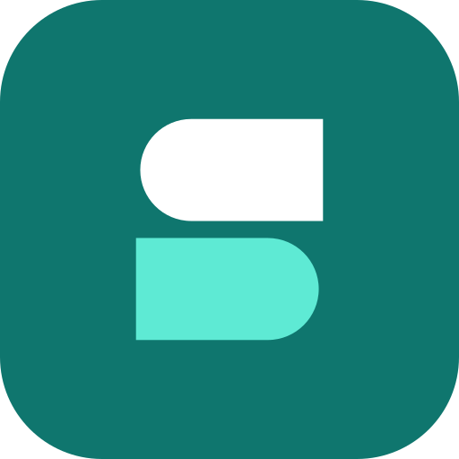
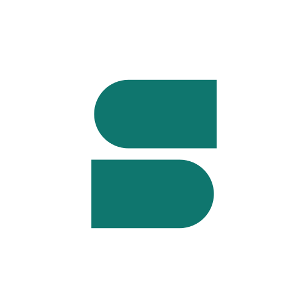
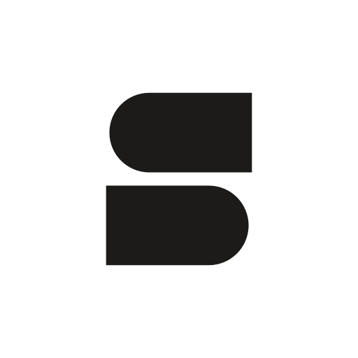
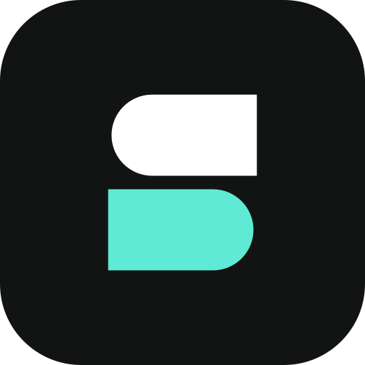